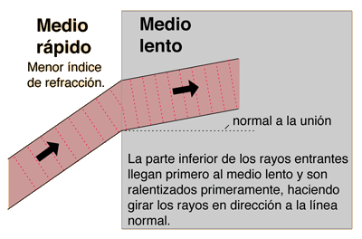
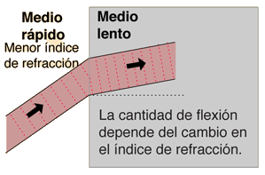
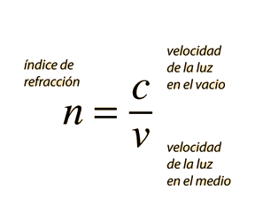
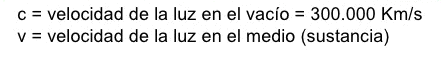
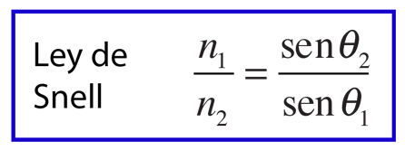
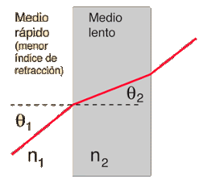

La refracción de una onda es la flexión que sufre cuando entra en un medio con velocidad de propagación diferente. La refracción de la luz, cuando pasa de un medio de propagación rápido a otro mas lento, dobla el rayo de luz en dirección a la normal a la superficie de contacto entre ambos medios. La cantidad de difracción depende de los índices de refracción de los dos medios y se describe cuantitativamente por la ley de Snell.
Se define el índice de refracción como la velocidad de la luz en el vacío, dividido por la velocidad de la luz en el medio.
  
Abajo se dan los índices de refracción de algunas sustancias comunes. Los valores dados son aproximados
y no tienen en cuenta las dispersión, que son las pequeñas variaciones del índice con la longitud de onda
de la luz.
| Sustancia | Índice de refracción |
|---|---|
| Agua | 1,333 |
| Aire | 1,0003 |
| Aceite | 1,470 |
| Benceno | 1,501 |
| Etanol | 1,361 |
| Vidrio | 1,58 |
| Cuarzo | 1,544 |
| Hielo | 1,309 |
| Diamante | 2,419 |
La ley de Snell relaciona los índices de refracción n de los dos medios, con las direcciones de propagación en términos de los ángulos con la normal.
 Si el medio incidente tiene un índice de refracción mayor, entonces aumenta por la refracción el ángulo con la normal. El medio con índice mayor se llama comunmente el medio "interno", ya que el aire con n=1, está normalmente rodeándolo (medio "externo"). Se puede calcular la condición para la reflexión interna total estableciendo el ángulo refractado = 90º y calculando en ángulo incidente. Puesto que la luz no se puede refractar mas de 90º, todos los ángulos mayores de 90º, reflejarán la luz calculada para el ángulo de 90º.